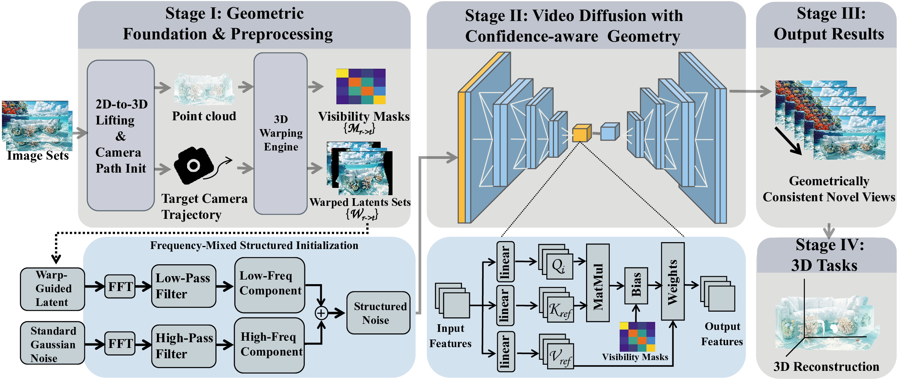
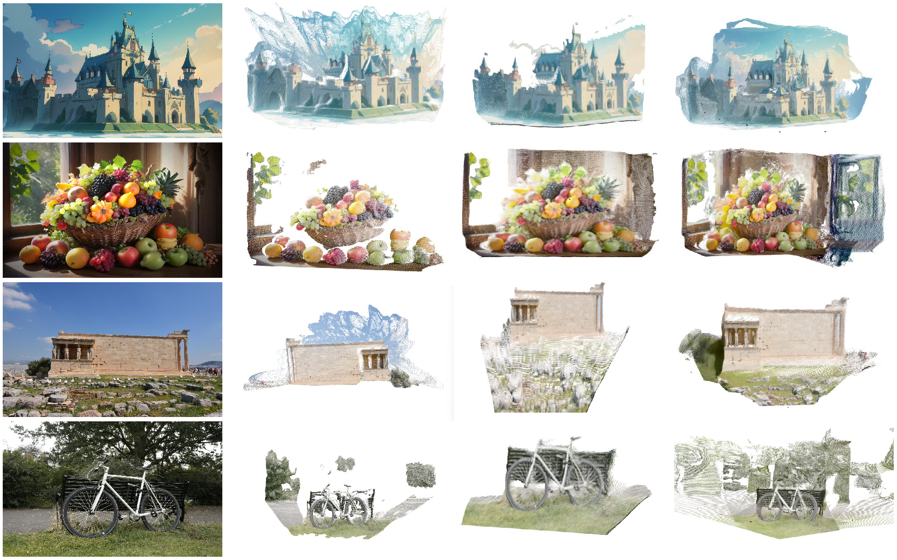
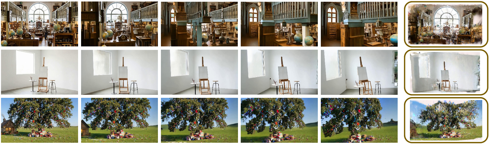
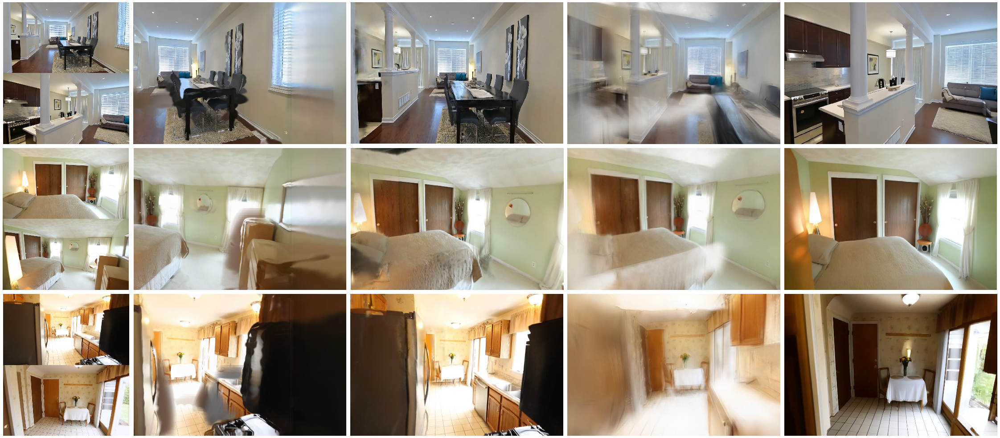
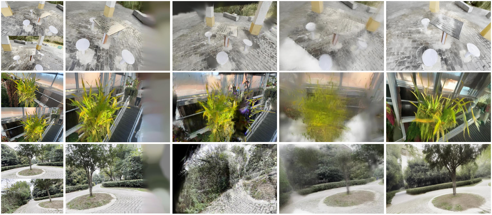
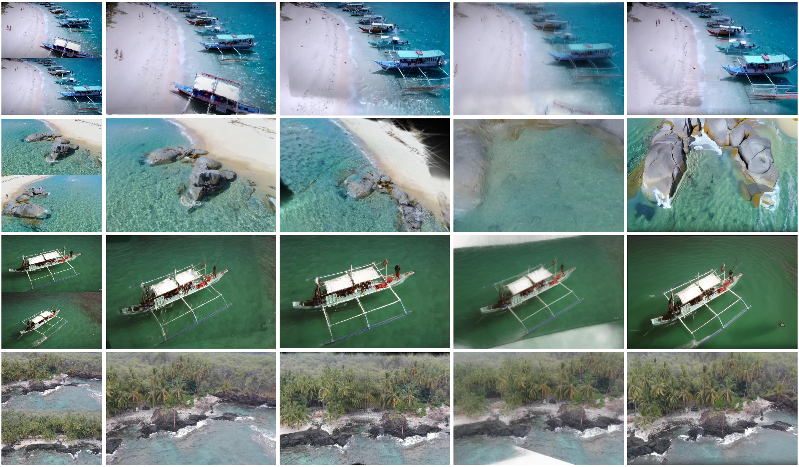
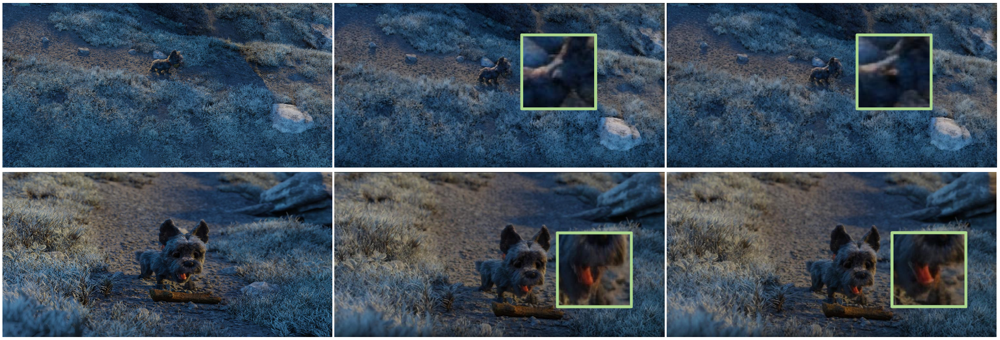
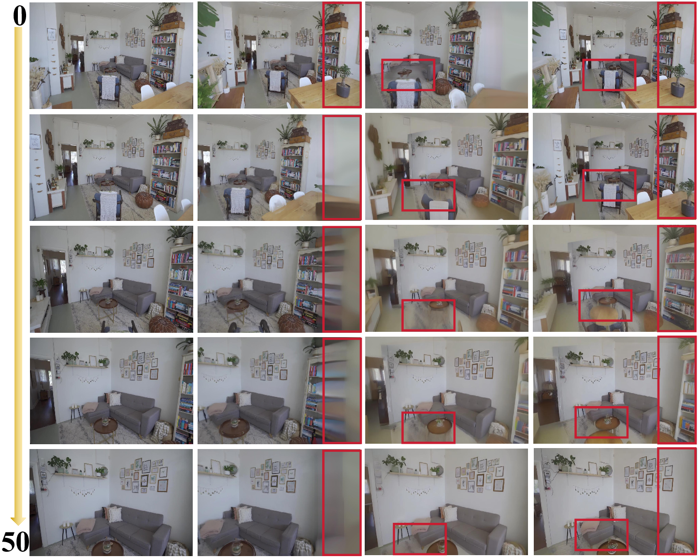
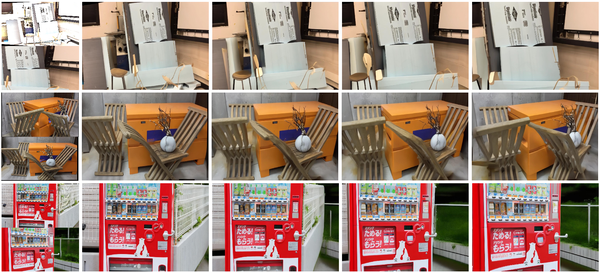

Scene 01Comparison
Abstract
- Frozen video-diffusion NVS backbone
- Frequency-Mixed Initialization
- Confidence-Gated Cross-View Attention
Video-diffusion models provide strong camera-indexed generation priors, but temporal coherence alone does not guarantee multi-view geometric compatibility. GeoConDiffusion treats coarse geometry as uncertain validity evidence during inference. Reliable low-frequency layout cues are injected into the initial latent, while confidence-gated cross-view attention suppresses geometrically invalid feature propagation during denoising. The method improves view fidelity, reconstruction-based consistency diagnostics, and downstream 3D reconstruction stability without retraining the denoiser or replacing the base synthesis pipeline.
Video Results
Scene 02Comparison
Scene 03Comparison
Scene 04Comparison
Scene 05Comparison
Scene 06Comparison
Scene 07Comparison
Scene 08Comparison
Method Overview

Paper Figures








BibTeX
Citation placeholder for the manuscript page.
@article{miao2026geocondiffusion,
title = {GeoConDiffusion: Inference-Time Geometry-Constrained Sampling for Video-Diffusion Novel View Synthesis},
author = {Miao, Yongwei and Xiao, Fangyuan and Liu, Fuchang and Fan, Ran and Ma, Guobin and Pajarola, Renato},
year = {2026}
}